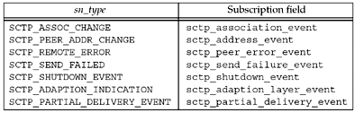
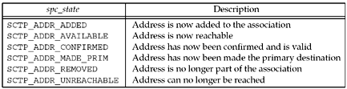

9.14 Notifications
SCTP makes a variety of notifications available to the application programmer. The SCTP user can track the state of its association(s) via these notifications. Notifications communicate transport-level events, including network status change, association startups, remote operational errors, and undeliverable messages. For both the one-to-one and the one-to-many styles, all events are disabled by default with the exception of sctp_data_io_event. We will see an example of using notifications in Section 23.7.
Eight events can be subscribed to using the SCTP_EVENTS socket option. Seven of these events generate additional data—termed a notification—that a user will receive via the normal socket descriptor. The notifications are added to the socket descriptor inline with data as the events that generate them occur. When reading from a socket with notification subscriptions, user data and notifications will be interleaved on the socket buffer. To differentiate between peer data and a notification, the user uses either the recvmsg function or the sctp_recvmsg function. When the data returned is an event notification, the msg_flags field of these two functions will contain the MSG_NOTIFICATION flag. This flag tells the application that the message just read is not data from the peer, but a notification from the local SCTP stack.
Each type of notification is in tag-length-value form, where the first eight bytes of the message identify what type of notification has arrived and its total length. Enabling the sctp_data_io_event event causes the receipt of sctp_sndrcvinfo structures on every read of user data (this option is enabled by default for both interface styles). This information is normally received in ancillary data using the recvmsg call. An application can also use the sctp_recvmsg call, which will fill a pointer to the sctp_sndrcvinfo structure with this information.
Two notifications contain an SCTP error cause code field. The values for this field are listed in Section 3.3.10 of RFC 2960 [Stewart et al. 2000] and in the "CAUSE CODES" section of http://www.iana.org/assignments/sctp-parameters.
Notifications have the following form:
struct sctp_tlv {
u_int16_t sn_type;
u_int16_t sn_flags;
u_int32_t sn_length;
};
/* notification event */
union sctp_notification {
struct sctp_tlv sn_header;
struct sctp_assoc_change sn_assoc_change;
struct sctp_paddr_change sn_paddr_change;
struct sctp_remote_error sn_remote_error;
struct sctp_send_failed sn_send_failed;
struct sctp_shutdown_event sn_shutdown_event;
struct sctp_adaption_event sn_adaption_event;
struct sctp_pdapi_event sn_pdapi_event;
};
Note that the sn_header field is used to interpret the type value, to decode the actual message being sent. Figure 9.6 illustrates the value found in the sn_header. sn_type field and the corresponding subscription field used with the SCTP_EVENTS socket option.

Each notification has its own structure that gives further information about the event that has occurred on the transport.
SCTP_ASSOC_CHANGE
This notification informs an application that a change has occurred to an association; either a new association has begun or an existing association has ended. The information provided with this event is defined as follows:
struct sctp_assoc_change {
u_int16_t sac_type;
u_int16_t sac_flags;
u_int32_t sac_length;
u_int16_t sac_state;
u_int16_t sac_error;
u_int16_t sac_outbound_streams;
u_int16_t sac_inbound_streams;
sctp_assoc_t sac_assoc_id;
uint8_t sac_info[];
};
The sac_state describes the type of event that has occurred on the association, and will take one of the following values: SCTP_COMM_UP | This state indicates that a new association has just been started. The inbound and outbound streams fields indicate how many streams are available in each direction. The association identification is filled with a unique value that can be used to communicate with the local SCTP stack regarding this association. | SCTP_COMM_LOST | This state indicates that the association specified by the association identification has closed due to either an unreachability threshold being triggered (i.e., the SCTP endpoint timed out multiple times and hit its threshold, which indicates the peer is no longer reachable), or the peer performed an abortive close (usually with the SO_LINGER option or by using sendmsg with a MSG_ABORT flag) of the association. Any user-specific information will be found in the sac_info field of the notification. | SCTP_RESTART | This state indicates that the peer has restarted. The most likely cause of this notification is a peer crash and restart. The application should verify the number of streams in each direction, since these values may change during a restart. | SCTP_SHUTDOWN_COMP | This state indicates that a shutdown initiated by the local endpoint (via either a shutdown call or a sendmsg with a MSG_EOF flag) has completed. For the one-to-one style, after receiving this notification, the socket descriptor can be used again to connect to a different peer. | SCTP_CANT_STR_ASSOC | This state indicates that a peer did not respond to an association setup attempt (i.e., the INIT message). |
The sac_error field holds any SCTP protocol error cause code that may have caused an association change. The sac_outbound_streams and sac_inbound_streams fields inform the application how many streams in each direction have been negotiated on the association. sac_assoc_id holds a unique handle for an association that can be used to identify the association in both socket options and future notifications. sac_info holds any other information available to the user. For example, if an association was aborted by the peer with a user-defined error, that error would be found in this field.
SCTP_PEER_ADDR_CHANGE
This notification indicates that one of the peer's addresses has experienced a change of state. This change may either be a failure, such as the destination is not responding when sent to, or a recovery, such as a destination that was in a failed state has recovered. The structure that accompanies an address change is as follows:
struct sctp_paddr_change {
u_int16_t spc_type;
u_int16_t spc_flags;
u_int32_t spc_length;
struct sockaddr_storage spc_aaddr;
u_int32_t spc_state;
u_int32_t spc_error;
sctp_assoc_t spc_assoc_id;
};
The spc_aaddr field holds the address of the peer affected by this event. The spc_state field holds one of the values described in Figure 9.7.

When an address is declared SCTP_ADDR_UNREACHABLE, any data sent to that address will be rerouted to an alternate address. Note also that some of the states will only be available on SCTP implementations that support the dynamic address option (e.g., SCTP_ADDR_ADDED and SCTP_ADDR_REMOVED). The spc_error field contains any notification error code to provide more information about the event, and spc_assoc_id holds the association identification.
SCTP_REMOTE_ERROR
A remote peer may send an operational error message to the local endpoint. These messages can indicate a variety of error conditions for the association. The entire error chunk will be passed to the application in wire format when this notification is enabled. The format of the message will be as follows:
struct sctp_remote_error {
u_int16_t sre_type;
u_int16_t sre_flags;
u_int32_t sre_length;
u_int16_t sre_error;
sctp_assoc_t sre_assoc_id;
u_int8_t sre_data[];
};
The sre_error will hold one of the SCTP protocol error cause codes, sre_assoc_id will contain the association identification, and sre_data will hold the complete error in wire format.
SCTP_SEND_FAILED
When a message cannot be delivered to a peer, the message is sent back to the user through this notification. This notification is usually soon followed by an association failure notification. In most cases, the only way a message will not be delivered is if the association has failed. The only time a message failure will occur without an association failure is when the partial reliability extension of SCTP is being used. When an error notification is sent, the following format will be read by the application:
struct sctp_send_failed {
u_int16_t ssf_type;
u_int16_t ssf_flags;
u_int32_t ssf_length;
u_int32_t ssf_error;
struct sctp_sndrcvinfo ssf_info;
sctp_assoc_t ssf_assoc_id;
u_int8_t ssf_data[];
};
ssf_flags will be set to one of two values:
SCTP_DATA_UNSENT, which indicates that the message could never be transmitted to the peer (e.g., flow control prevented the message from being sent before its lifetime expired), so the peer never received it SCTP_DATA_SENT, which indicates that the data was transmitted to the peer at least once, but was never acknowledged. In this case, the peer may have received the message, but it was unable to acknowledge it.
This distinction may be important to a transaction protocol, which might perform different actions to recover from a broken connection based on whether or not a given message might have been received. ssf_error, if not zero, holds an error code specific to this notification. The ssf_info field provides the information passed (if any) to the kernel when the data was sent (e.g., stream number, context, etc.). ssf_assoc_id holds the association identification, and ssf_data holds the undelivered message.
SCTP_SHUTDOWN_EVENT
This notification is passed to an application when a peer sends a SHUTDOWN chunk to the local endpoint. This notification informs the application that no new data will be accepted on the socket. All currently queued data will be transmitted, and at the completion of that transmission, the association will be shut down. The notification format is as follows:
struct sctp_shutdown_event {
uint16_t sse_type;
uint16_t sse_flags;
uint32_t sse_length;
sctp_assoc_t sse_assoc_id;
};
sse_assoc_id holds the association identification for the association that is shutting down and can no longer accept data.
SCTP_ADAPTION_INDICATION
Some implementations support an adaption layer indication parameter. This parameter is exchanged in the INIT and INIT-ACK to inform each peer what type of application adaption is being performed. The notification will have the following form:
struct sctp_adaption_event {
u_int16_t sai_type;
u_int16_t sai_flags;
u_int32_t sai_length;
u_int32_t sai_adaption_ind;
sctp_assoc_t sai_assoc_id;
};
The sai_assoc_id identifies of association that this adaption layer notification. sai_adaption_ind is the 32-bit integer that the peer communicates to the local host in the INIT or INIT-ACK message. The outgoing adaption layer is set with the SCTP_ADAPTION_LAYER socket option (Section 7.10). The adaption layer INIT/INIT-ACK option is described in [Stewart et al. 2003b], and a sample usage of the option for remote direct memory access/direct data placement is described in [Stewart et al. 2003a].
SCTP_PARTIAL_DELIVERY_EVENT
The partial delivery application interface is used to transport large messages to the user via the socket buffer. Consider a user writing a single message of 4MB. A message of this size would tax or exhaust system resources. An SCTP implementation would fail to handle such a message unless the implementation had a mechanism to begin delivering the message before all of it arrived. When an implementation does this form of delivery, it is termed "the partial delivery API." The partial delivery API is invoked by the SCTP implementation sending data with the msg_flags field remaining clear until the last piece of the message is ready to be delivered. The last piece of the message will have the msg_flags set to MSG_EOR. Note that if an application is going to receive large messages, it should use either recvmsg or sctp_recvmsg so that the msg_flags field can be examined for this condition.
In some instances, the partial delivery API will need to communicate a status to the application. For example, if the partial delivery API needs to be aborted, the SCTP_PARTIAL_DELIVERY_EVENT notification must be sent to the receiving application. This notification has the following format:
struct sctp_pdapi_event {
uint16_t pdapi_type;
uint16_t pdapi_flags;
uint32_t pdapi_length;
uint32_t pdapi_indication;
sctp_assoc_t pdapi_assoc_id;
};
The pdapi_assoc_id field identifies the association upon which the partial delivery API event has occurred. The pdapi_indication holds the event that has occurred. Currently, the only valid value found in this field is SCTP_PARTIAL_DELIVERY_ABORTED, which indicates that the currently active partial delivery has been aborted.
 |